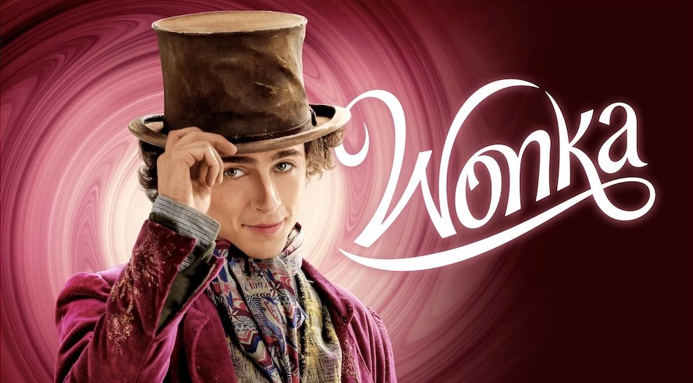

Fantasía musical sobre Willy Wonka antes de convertirse en el mayor fabricante de chocolate y caramelos de todo el mundo. Su historia plasma los comienzos vívidos y míticos de un imaginativo joven inventor, que no tardará en convertirse en el famoso y delicioso Mozart del chocolate. El joven se embarca en una misión para difundir alegría a través de sus invenciones, que rápidamente se convierten en un fenómeno y llamarán la atención del "Cartel del Chocolate". La historia de Wonka estará también marcada por su madre y por su amistad con un joven huérfano.
Sinopsis
La historia se centrará específicamente en un joven Willy Wonka y en cómo conoció a los Oompa-Loompas en una de sus primeras aventuras.